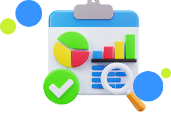
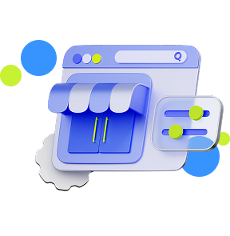

Platform bursa kerja inklusif yang menghubungkan talenta lokal, pemula, dan disabilitas dengan ekosistem UMKM serta bisnis digital Indonesia.
Peluang Kerja
UMKM Terintegrasi
Terverifikasi
Lowongan ramah pemula, remote. dan inklusif bagi pencari kerja dari berbagai latar belakang.

Dilengkapi fitur edukasi Fair Pay untuk memastikan hak pekerja dan mencegah kesenjangan upah.

Membantu bisnis lokal mendapatkan talenta berkualitas dengan proses rekrutmen yang efisien.